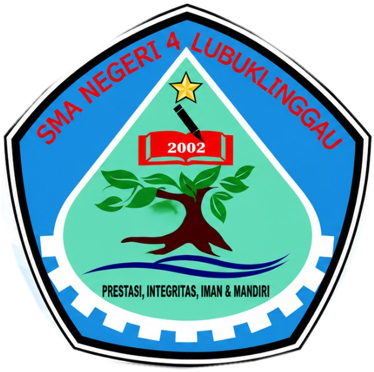

Monitoring & Rekap PJJ
Memuat profil...
Memuat data...
Filter laporan
—
Pilih tanggal dari daftar, kemudian tekan Terapkan. Reset menampilkan semua laporan.
| Tanggal | Guru | Mapel | Kelas | JP | Media | Materi | Tugas | Status / Kendala | Bukti | Aksi |
|---|

Memuat profil...
—
Pilih tanggal dari daftar, kemudian tekan Terapkan. Reset menampilkan semua laporan.
| Tanggal | Guru | Mapel | Kelas | JP | Media | Materi | Tugas | Status / Kendala | Bukti | Aksi |
|---|